Wandering Start
An optional game mode: you begin not with a Settler but a roaming band, and live off the land until you found your first city — where you choose an Origin Myth. The overview below is drawn from the mod's in-game Civilopedia.
Nomadic Start
Nomadic Start is an optional game mode turned on in game setup. No civilization founds a city on the first turn: each major civilization begins with a Wandering Band in place of its Settler and lives off the land until it meets one of the conditions for settling.
While you have no city, the band is your civilization. A player left with no city, no band and no Settler is defeated. Everything on this page stops applying once your first city is founded.
The Wandering Band
The Wandering Band replaces the starting Settler and cannot found a city. It has 8 ⚔️ Combat Strength, 3 👣 Movement and 2 sight, and it fights as a military unit, so it can be damaged and killed.
Foraging and hunting earn the band experience. Each promotion raises its food upkeep by 1, and the fifth promotion earned is one of the conditions for settling. There are seven promotions across four tiers: earning either promotion in a tier unlocks the next tier, so the band can follow just one path to the capstone or work toward both branches and eventually earn all seven, at the cost of that much more upkeep.
•Moving more easily through woods and rainforest / through hills
•Gathering more from each tile / raising outposts more cheaply
•Hunting more successfully / recruiting more cheaply
•A final promotion that grants a Hearth to the first city this band founds
While you have no city you gain +1 🧪 Science and +1 🎭 Culture each turn. This stops when your first city is founded.
Foraging and Hunting
The band collects from the tile it stands on with actions of its own, and what it collects is held as stores that travel with it rather than in a city:
•Food Gathering, on edible resources, forests and rainforests: 🌾 Food. Once Gathering is researched, also on Marsh, Floodplains, and Oases
•Material Gathering, on mineral resources, forests, rainforests, and fiber and spice resources: 🔨 Materials. Once Knapping is researched, also on Hills
•Freshwater Fishing, beside a river once Gathering is researched: 🌾 Food
•Coastal Fishing, beside the sea once Shore Fishing is researched: 🌾 Food
The amount gathered equals the tile's own yield, though 🌾 Food gathering always grants at least 1. Where animals are present the band may hunt instead: a hunt grants both 🌾 Food and 🔨 Materials, but fails 40% of the time and grants nothing. A failed hunt still uses up the tile.
A tile that has been foraged or hunted is marked as exhausted and cannot be used again for 20 turns, after which it recovers on its own.
The band can also make stone tools where it stands, for 3 🔨 Materials, or 2 on a river tile, on hills, or on a tile with Stone. The tools last 5 turns and grant +1 to each gathering action, 15% less hunt failure, and +1 ⚔️ Combat Strength to the band and any recruited units. Once Ground Stone Tools is researched the same action lasts 7 turns and grants +2, 30% less, and +2 Combat Strength instead.
Food and Starvation
Each turn the band eats from your stores. The upkeep is 1 🌾 Food plus 1 for every promotion the band has earned, so a more advanced band is more expensive to keep.
If the stores cover the upkeep, the food is spent and the band heals 10 HP. If they do not, the band takes 10 damage instead, and a band reduced to no health starves to death.
Losing the band before founding a city therefore ends the game. Barbarians and rival units are as dangerous as hunger, since the band has no city to fall back on.
Events on the Road
While wandering, the road itself brings events. Each presents a situation suited to the band's terrain and to what it has done so far, then offers a choice between two options.
The result of a choice may follow at once or turn on chance. Rewards range beyond 🌾 Food and 🔨 Materials to experience, tools, healing, and knowledge of the land around, while a poor outcome can cost health or simply time.
An event has a 12% chance to occur each turn, rising by 4 percentage points for every turn without one, up to a maximum of 85%. Finding a tribal village or destroying a barbarian camp also triggers its own dedicated event.
Outposts and Recruitment
Once Fire is researched the band can spend 10 🔨 Materials to raise an Outpost. Promotions and certain policies reduce that cost.
Outposts cannot be raised on Desert or Snow, and on Tundra only once Needle is researched. Oasis and desert Floodplains are allowed as exceptions.
An Outpost adds its tile's 🌾 Food and 🔨 Materials to your stores every turn, and a unit defending on it gains +2 ⚔️ Combat Strength. It is destroyed if any unit not your own moves onto it, so an undefended Outpost is easily lost.
Standing next to an Outpost, the band can spend stored 🌾 Food and 🔨 Materials to recruit a unit. Every recruit costs 2 🌾 Food, so only the 🔨 Materials differ:
•Forager: 5
•Pathfinder: 12
•Slinger: 18, added once Composite Tools is researched
•Warrior: 20
•Dugout Canoe: 30, recruited only at an Outpost beside the sea once Watercraft is researched
The Rewired Tech Tree
The Prehistoric tree is rebuilt for this mode, and Stone Tools is no longer granted at the start. A nomadic people begins knowing nothing at all and must research Stone Tools first.
From there the tree runs through a single bottleneck. Fire requires both Hunting and Gathering, so neither branch can be skipped:
•Stone Tools leads to Hunting and to Gathering
•Fire requires Hunting and Gathering together
•Fire then opens five at once: Shore Fishing, Hide Working, Composite Tools, Observation of Nature and Food Drying
•Those lead on to Watercraft, Needle and Ground Stone Tools, which together with Observation of Nature and Food Drying are required by Sedentism
The nodes beyond Sedentism are rewired to match: Agriculture, Pottery and Domestication all require Sedentism.
Because the tree changed, several unlocks move with it:
•Warrior and Forager: Fire
•Slinger: Composite Tools
•Luxury resources stay hidden on the map until you can recognise them, minerals with Stone Tools, animals with Hunting and plants with Gathering
Settling Down
A band with no city turns into a Settler as soon as any one of the following is true, and you then found your first city normally:
•Sedentism is researched
•Your civilization leaves the Prehistoric Era
•You take another player's Settler
•You come to hold a city by any means, including conquest
While Longer Wandering is on, the promotion and outpost conditions of the standard rules do not apply. Sedentism is the intended route; the remaining conditions cover cases where a city is acquired without it.
Secret Societies
If you are playing with the Secret Societies game mode, a society you would discover while your band is still wandering does not appear at once. The discovery is held until you found your first city, after which held discoveries arrive one per turn.
History
For all but a sliver of the human story, people lived on the move. Hunting and gathering was not a failed step on the way to farming, but a way of life that sustained our species for tens of thousands of years, from the reindeer herders of the far north to the foragers of tropical forests.
The idea that settling down was simply "progress" has been questioned by scholars such as James C. Scott, who note that early states worked hard, often by force, to bind people to the land and its grain. Life on the move offered freedom from that grip. The turn to villages, fields, and the first cities was slow and uneven — and it was in that turn that peoples began to tell the founding stories, the origin myths, that gave their new homes meaning.
The 25 Origin Myths
When your band founds its first city, you choose one of these — each grants a permanent bonus, and which are offered is shaped by the journey your band walked (the "journey" line is what earns each one).
The First Word
Cities earn 🧪 Science per turn equal to 15% of their ✨ Faith per turn rate.
The heart conceived, and the tongue commanded; thus were born all gods and all things.— Memphite Theology, Shabaka Stone
From Chaos, Order
+10% ✨ Faith, 💰 Gold, 🎭 Culture, and 🧪 Science in all cities when in a GLORY GOLDEN AGE Golden Age or Heroic Age. +1 Era Score from each Historic Moment earned during a Dark Age.
First of all Chaos came to be, and then wide-bosomed Earth, the ever-sure foundation of all.— Hesiod, Theogony
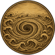
The Primeval Sea
Coast and Lake tiles provide +1 🌾 Food, and Ocean tiles provide +2 🌾 Food.
Then there was neither death nor immortality; all was water, deep and unmarked.— Rigveda, Nasadiya Sukta
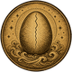
The Cosmic Egg
Gain +1 👤 Population when settling your first city. +1 🏠 Housing in all cities.
In the beginning this was non-being. It became being, and grew into an egg. After a year it split open: one half silver, one half gold.— Chandogya Upanishad
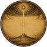
Between Sky and Earth
+1 😊 Amenity in all cities. Border expansion rate is 15% faster.
I am Shu, whom Atum created. I stand between sky and earth, and lifted my daughter Nut above my head.— Egyptian Coffin Texts
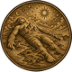
The Body of the Giant
Tiles adjacent to Mountains and Coast tiles provide +1 🔨 Production. Units receive +5 ⚔️ Combat Strength in tiles adjacent to Mountains or Coast.
From Ymir's flesh the earth was made, from his blood the sea, mountains from his bones, trees from his hair, and from his skull the sky.— Poetic Edda, Grímnismál
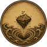
The Mud from Below
Cities founded adjacent to fresh water start with 5 additional tiles of territory.
Bird and otter rose with empty paws. Last went the muskrat, and floated up breathless, one clutch of mud in its claws. From that mud the world was made.— Cree oral tradition
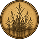
People from the Reeds
+1 🌾 Food from Marsh, Oasis, and Floodplains. +20% 🔨 Production toward military units.
Unkulunkulu came out of the bed of reeds. And the people, too, broke off from the reeds.— Zulu tradition, recorded by Callaway
Light and Darkness
All units receive +1 sight range. Gain 🧪 Science equal to 25% of the cost of your current research for each natural wonder you discover, and 10% for each civilization or city-state you meet.
This I ask you, Ahura Mazda: what craftsman made light and darkness? What craftsman made sleep and waking?— Avesta, Yasna 44
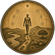
The Dreaming
All tiles in your civilization gain +1 Appeal. Tiles with Breathtaking Appeal gain +1 🎭 Culture.
The Dreaming is not a long-gone age. It is the beginning, and it is everywhen.— W. E. H. Stanner, The Dreaming
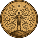
The First Ancestor
+1 🎭 Culture and +2 Loyalty per turn in all cities. +1 🎖️ Great General point per turn.
The Gauls all declare that they are descended from Dis Pater; this, they say, is the teaching handed down by the Druids.— Caesar, The Gallic War
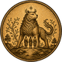
Children of the Divine Beast
+1 🔨 Production and +1 ✨ Faith from Camps and Pastures. When settling your first city, a random animal resource appears near it.
The ancestor of Genghis Khan was a blue-grey wolf born by the decree of Heaven, and his wife was a fallow doe. They crossed the great water and settled at the source of the Onon.— The Secret History of the Mongols
Children of Heaven
+0.3 ✨ Faith per 👤 Citizen in all cities.
Hwanung descended with three thousand followers to the sacred tree atop Mount Taebaek, and named that place the City of God.— Samguk Yusa
Born of the Soil
Each district other than the City Center provides +1 🎭 Culture.
Their forefathers were no immigrants from elsewhere: they were truly born of the soil, dwelling in the bosom of the earth, their mother.— Plato, Menexenus
The Founder from Afar
+1 TradeRoute Trade Route capacity. When you found a city, receive a random 💡 Eureka or 💡 Inspiration.
Beyond the realms of Gaul lies an island in the sea, once held by giants, now empty and fit for your people. There a second Troy shall rise for your descendants.— Geoffrey of Monmouth, History of the Kings of Britain
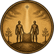
The Founding Brothers
All cities you found or conquer receive a free melee unit. Cities on Hills or adjacent to a River receive +1 🔨 Production, or +2 if both.
The twin brothers were seized by the desire to found a city on the very spot where they had been abandoned and reared.— Livy, History of Rome
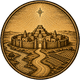
The First City
+25% 🧪 Science in your ⭐ Capital. Cities adjacent to a River receive +1 🧪 Science.
When kingship descended from heaven, kingship was in Eridu.— Sumerian King List
The Long Journey
+1 👣 Movement for civilian units (except Great People and religious units). Cities founded on a continent other than your home continent receive +20% faster growth and +10% 🔨 Production.
We came from Hawaiki. Following the stars, over the swells, the canoes carried us to the Land of the Long White Cloud.— Māori tradition
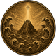
The Great Flood
Citizens may work Mountain tiles. Mountain tiles provide +1 🌾 Food and +1 🎭 Culture. When a Flood occurs, the city gains 🌾 Food instead of taking damage.
Kaikai raised the waters, and the sea swallowed the land. Trentren raised the mountains — and as the water rose, so rose the peaks.— Mapuche tradition
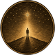
The Chosen
+2 GreatProphet Great Prophet points per turn. Receive a GreatWork Relic Relic when settling your first city.
The glory of Zion came to Ethiopia with the son of Solomon. From that day, this land was chosen.— Kebra Nagast
Forged in Struggle
Receive +5 ⚔️ Combat Strength against stronger units. Defeating an enemy unit causes the nearby enemy city to lose 10 Loyalty (20 during a Golden Age).
It is not for glory, nor riches, nor honours that we fight, but for freedom alone, which no good man gives up except with his life.— Declaration of Arbroath
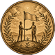
Born in Peace
+2 Influence points per turn toward earning city-state 🤝 Envoys. +2 Favor Diplomatic Favor per turn.
Lying eternally in a splendid cradle, to the sound of the sea and the light of the deep sky.— Brazilian National Anthem
The Unburning Gold
Combat victories provide 💰 Gold equal to 100% of the ⚔️ Combat Strength of the defeated unit. (on Standard Speed) +2 ✨ Faith from tiles with the Gold resource. Where possible, a Gold resource appears near your first city.
Golden implements fell from the sky. When the elder brothers approached, the gold blazed with fire; but when the youngest came, the flames died — and so the kingship became his.— Herodotus, Histories
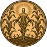
People of Maize
Resources improved by Farms gain +1 🌾 Food and +1 🧪 Science each. Where possible, Maize resources appear near your first city.
Of yellow corn and of white corn their flesh was made; it became the flesh of our first fathers.— Popol Vuh
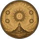
The Fifth Sun
Combat victories provide ✨ Faith equal to 50% of the ⚔️ Combat Strength of the defeated unit. You may sacrifice a unit on or adjacent to your Holy Site to gain ✨ Faith equal to 100% of its 🔨 Production cost (on Standard Speed).
Nanahuatzin cast himself into the fire, and the sun rose. But the sun did not move — only when the gods gave their blood did it set out on its path.— Leyenda de los Soles